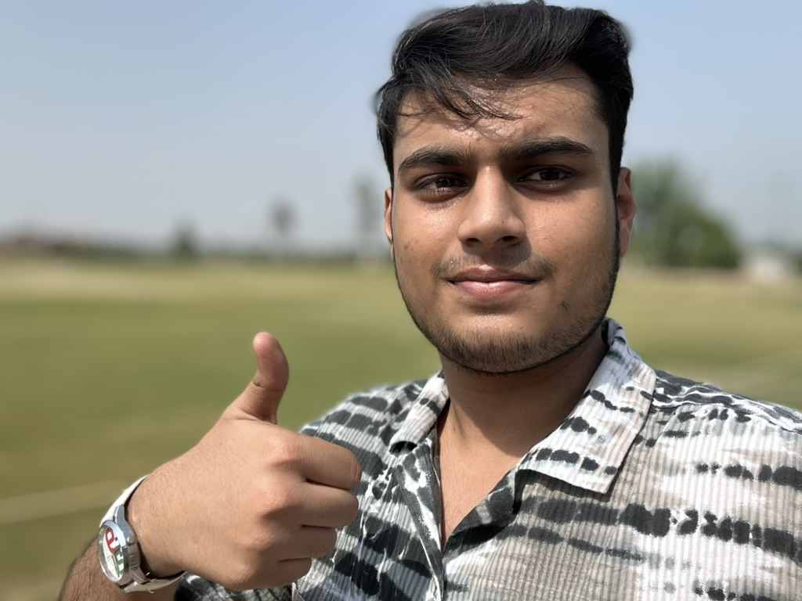

This blog is just my personal opinion. Everyone’s journey is different, but here’s mine — honest and unfiltered.
If you're starting photography with the main goal of making 💵💸, this blog might not be for you. But if you love the art of capturing moments, enjoy the process, and are willing to put in time and effort just because you genuinely love it — then my friend, you're in the right place🍀🍀
It all began at a wedding. I saw these big professional cameras and the way the photographers looked through their viewfinders — it just clicked with me. It looked so cool and serious. Around the same time, some kids at school had professional cameras too, which made me even more curious. But it wasn’t just that — the internet played a huge role. I’d come across these amazing wallpapers, National Geographic photo spreads, and beautifully edited shots. I was stunned. I picked up my old phone and just started shooting whatever caught my eye.
Little by little, I started to notice things I had never paid attention to — small details, light, angles. I started to see the world differently. And the feeling of freezing a moment in time? I absolutely loved it. I could spend hours taking photos and not even realize how much time had passed. That’s when I realized: this is something I truly enjoy. I turned to Google and YouTube to learn — tips, tricks, tutorials — but the best teacher? Just going out and shooting. Practicing. Experimenting. That’s where real improvement comes from.
At first, like a lot of people, I thought, “If I had an expensive camera, I’d be a great photographer.” One of my school friends had one, and when I finally got to use it, I realized — sure, it felt amazing — but almost 90% of the features I was already using on my phone. Yes, professional cameras have real lenses, physical aperture settings, etc., but trust me — you can create beautiful photos with your phone. I still use my phone for quick shots of everyday life, and some of those turn out to be my favorites. Later, my dad gave me his old camera. I started using that, and again — I just enjoyed the process. The gear didn’t make me a better photographer. The shooting did
Think of it this way: a camera is like a typewriter. It doesn’t write the story — the writer does, it plays no role in the story. Same with photography. Your creativity, your eye, your passion — that’s what makes a photo great. You could give someone the most expensive RED camera, and they might still shoot boring photos. Meanwhile, someone like Christopher Nolan could take better photos than most of us using just a phone. So don't wait for gear. Just go out and shoot.
If you go out, shoot, and enjoy it — congratulations, you’re already a photographer. You don’t need permission, a certificate, or a $3,000 setup. If you want, save up for a decent second-hand camera someday — sure, they look cool (and feel awesome to use 😄). But don’t ever let gear stop you from doing what you love. Because spending your time doing something you don’t love? That’s the real waste. Your time is limited — don’t waste it. Enjoy it
Thanks for reading. And trust me, my friend — you’re a great photographer already. Just go out and shoot. 📸
